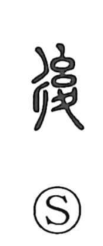

後

Uncategorized
Kun: nochi, ushiro, ato, okureru | On: go, kou
after ・ later ・ behind ・ back ・ to be late
Explanation
This character combines three elements: 彳, the side of a crossroads, evoking a road; 幺, a twisted thread bundle used as a ritual curse implement (as seen in the old form of 禦); and 夊, footprints turned backward. Together they depict a rite in which a thread-bundle charm is employed to compel an enemy to retreat. From this image of driving someone back arise the senses of “back/behind,” “to move back,” and, by extension, “later/after” and “to be late.”